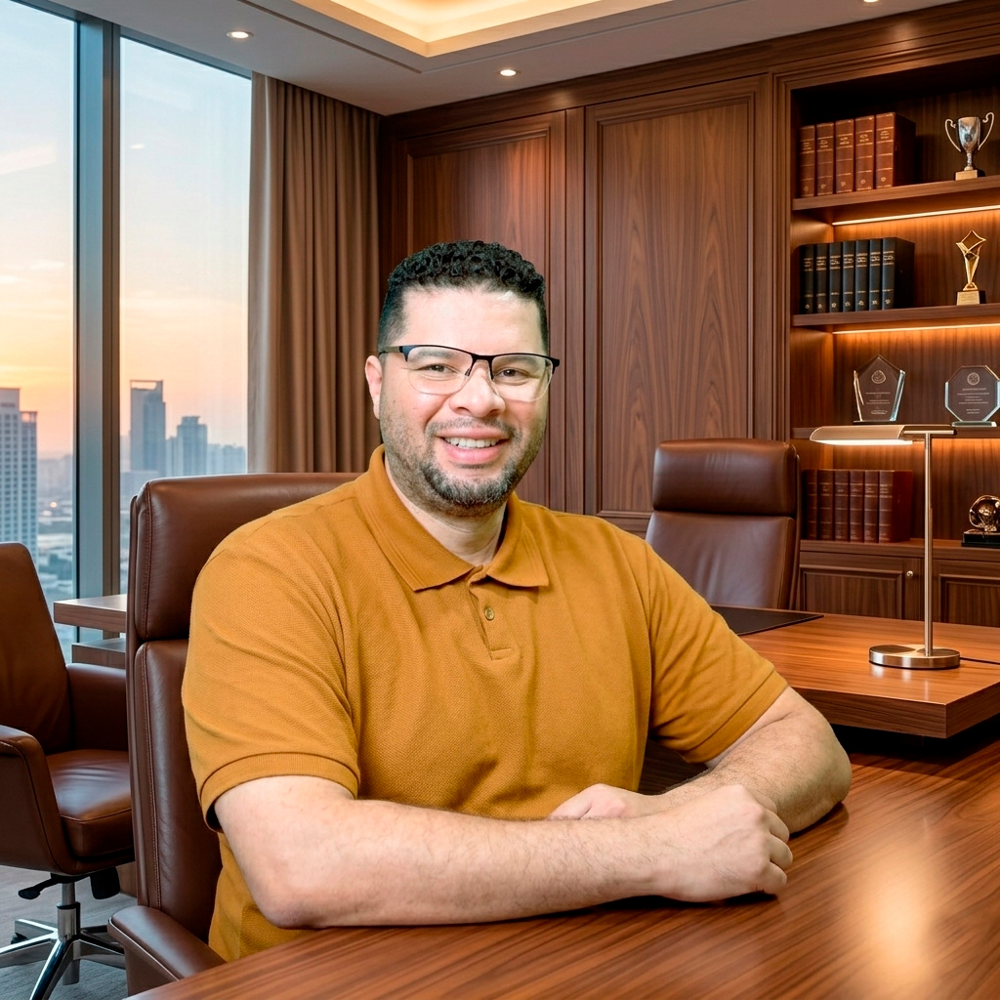

Leia e reflita
Os livros abrem espaço para perguntas e reflexões sobre consciência, espiritualidade e a jornada humana.
Explorar os livros →C.E.U. · Centro de Estudo Universal
Sou Diego Januário, pastor do Novo Caminho. Livros, estudos e serviços são ferramentas para ajudar você a buscar propósito e avançar na sua jornada.
O propósito vem primeiro
O Novo Caminho convida você a encontrar um propósito para seguir. Livros, estudos e serviços são ferramentas para ajudar a compreender o que você busca, definir seus objetivos e escolher os próximos passos da sua jornada.
Os livros abrem espaço para perguntas e reflexões sobre consciência, espiritualidade e a jornada humana.
Explorar os livros →Acesse os conteúdos publicados pelo Centro de Estudo Universal para continuar sua busca e aprofundar seus estudos.
Ver conteúdos do C.E.U. ↗Conheça os serviços disponíveis como ferramentas de apoio. Cada pessoa pode escolher o recurso de acordo com seus objetivos.
Conhecer os serviços →Livros e materiais para estudo
Os livros são ferramentas de estudo e reflexão no Novo Caminho. Comece por Eu Sou a Consciência desse Corpo?, em destaque, e conheça também as outras duas obras.

Uma investigação autoral sobre corpo, memória, alma e consciência. O livro aproxima perguntas antigas de uma linguagem própria e convida o leitor a construir sua interpretação.

Uma leitura sobre diferentes tradições espirituais e os caminhos que organizam nossa visão de mundo.
Ver edição impressa na UICLAP ↗
Reflexões sobre espiritualidade, a jornada humana e o sentido de evoluir enquanto se vive no mundo.
Ver edição impressa na UICLAP ↗Os botões levam às páginas de compra das lojas ou ao contato direto com o autor para informações sobre o e-book.
Pastor do Novo Caminho, escritor e educador

Sou Diego Januário, pastor do Novo Caminho. Compartilho livros, estudos e serviços como ferramentas para ajudar as pessoas a buscar propósito e avançar na jornada que escolheram seguir.
Acredito que cada pessoa precisa encontrar um propósito para seguir. Os recursos reunidos neste site oferecem diferentes formas de estudar, refletir e buscar apoio ao longo desse caminho.
Acompanhar pessoas na busca de um propósito para seguir o Novo Caminho, oferecendo estudos, livros e serviços como ferramentas para alcançar os objetivos da própria jornada.
Conheça os recursos disponíveis e escolha, de acordo com seus objetivos, o apoio que faz sentido para sua jornada.
As terapias são recursos de apoio, escolhidos conforme o objetivo e o momento de cada pessoa.
Técnica milenar japonesa que canaliza energia vital através das mãos para reequilibrar os corpos, desbloqueando o fluxo natural de energia e acelerando a cura profunda.
Você sente um cansaço constante sem explicação, dores que os médicos não conseguem resolver ou uma sensação de peso que não passa?
Terapia energética que limpa, energiza e reequilibra o campo energético do corpo, curando doenças físicas e emocionais, encerrando carmas e desequilíbrios energéticos, livrando de obsessores e métodos de amarração.
Você percebe que adoece com frequência, que sua energia se esgota rapidamente ou que carrega emoções pesadas que parecem não ser suas?
Técnica espiritual profunda que liberta o ser de influências energéticas negativas, espíritos perturbadores e padrões cármicos que bloqueiam sua evolução e felicidade.
Você sente que algo te impede de evoluir, que repete situações dolorosas sem entender o porquê, ou vive com medos e angústias sem origem aparente?
Processo terapêutico que acessa memórias e traumas de outras existências que ainda influenciam seus comportamentos, medos, relacionamentos e doenças nesta vida.
Você tem medos irracionais, atrações ou repulsas inexplicáveis por pessoas e lugares, ou sente que carrega um peso que não é desta vida?
Uso terapêutico das cores e dos números como ferramentas de diagnóstico e equilíbrio, revelando padrões ocultos da personalidade e indicando caminhos para harmonização. Corrigindo bloqueios ocultos em nomes, datas e cores.
Você sente que está fora do seu eixo, sem direção clara, ou que sua vida financeira oscila sem controle afetando suas decisões?
Técnica de diagnóstico vibracional que identifica desequilíbrios sutis nos corpos, do ambiente, dos alimentos, lugares, pessoas e situações através de instrumentos sensíveis que atuam nos campos energéticos.
Você sente que algo no seu ambiente ou no seu corpo não está bem, mas os exames convencionais não apontam nada?
Orientação para transformar sua relação com a alimentação, identificando como os hábitos alimentares impactam diretamente seu humor, energia e saúde.
Você acha que a comida está te fazendo mal, sente que o que come influencia seu humor, ou quer cuidar do corpo como parte da sua transformação?
Uso terapêutico de plantas medicinais e óleos essenciais para apoiar processos de cura física e emocional, combinando o poder da natureza com o trabalho terapêutico.
Você busca alternativas naturais para complementar seu processo de cura, reduzir ansiedade ou fortalecer seu equilíbrio energético?
Informações sobre as conversas, práticas e serviços disponíveis como apoio.
A primeira sessão é uma conversa online de 50 a 90 minutos. Onde ouvimos o que você precisa desconstruir, identificamos os padrões e crenças que estão travando sua vida e já analisamos o que se precisa fazer.
Resultado: Você sai com mais clareza sobre o que precisa ser transformado e com um direcionamento personalizado para os próximos passos.
Através de perguntas estruturadas e técnicas específicas, nós mapeamos os padrões emocionais e comportamentais que moldam suas reações e decisões.
Prática: Em cada sessão são aplicados exercícios práticos que você leva para o dia a dia, criando mudanças reais e duradouras no seu comportamento.
Após identificar os bloqueios na terapia conversacional, Diego avalia se alguma terapia holística pode acelerar ou complementar o processo. Cada indicação é especializada, nem todos precisam de todas as terapias.
Objetivo: Tratar a causa raiz, não apenas os sintomas.
Muitos clientes percebem mudanças já na primeira sessão. Com o acompanhamento contínuo, os resultados se aprofundam — menos ansiedade, relacionamentos mais saudáveis, mais clareza, propósito e liberdade.
Processo: O ritmo varia de pessoa para pessoa, mas é sempre honesto, direto e respeitoso.
Veja o que dizem as pessoas que passaram pelo processo
As sessões com Diego me ajudaram a entender padrões que eu repetia há anos sem perceber. Hoje me relaciono de forma mais saudável comigo e com as pessoas ao meu redor.
Maria Silva
Cliente há 6 meses
Eu estava perdido, sem saber qual direção tomar na vida. A análise de padrões me trouxe clareza sobre minhas crenças limitantes. Hoje tenho propósito e motivação.
João Pedro
Cliente há 1 ano
Sofria com ansiedade há anos. As terapias holísticas junto com a análise de padrões emocionais mudaram minha vida. Finalmente encontrei equilíbrio.
Ana Luiza
Cliente há 8 meses
Profissional dedicado e atencioso. O trabalho é profundo, mas sempre com respeito ao meu tempo. Recomendo para quem busca autoconhecimento de verdade.
Carlos Eduardo
Cliente há 4 meses
Encontrei nas sessões um espaço seguro para trabalhar questões profundas. Diego tem uma escuta acolhedora e ferramentas poderosas. Muito grata!
Beatriz Costa
Cliente há 10 meses
A análise de padrões me mostrou comportamentos que vinham da minha família e que eu nem sabia que carregava. Hoje consigo fazer escolhas mais conscientes.
Rafael Santos
Cliente há 7 meses
Transparência e clareza sobre valores
Acredito em transparência. Informar os valores desde o início evita perda de tempo para ambos e qualifica o atendimento. Assim, você já sabe se o investimento cabe no seu orçamento.
50 a 100 minutos
Identificação de padrões e soluções para mudança
Apartir de:
R$ 250,00
Duração 2 meses
Ideal para resolver qualquer situação
R$ 800,00
Economia de R$ 200,00
Sessões quinzenais
Para aprimoramento ou aptidão de alguma habilidade
Consulte condições
Cartão de crédito (até 1x sem juros), PIX, transferência bancária
Atendimento presencial em São Paulo (endereço informado após agendamento) ou online via videochamada
Entre em contato pelo WhatsApp para verificar disponibilidade e agendar sua sessão
Se quiser conversar sobre o Novo Caminho, os estudos ou os serviços como ferramentas para seus objetivos, fale comigo.
A forma mais rápida de falar comigo:
Conversar sobre o Novo Caminho+55 (11) 99213-7770
Horário de atendimento:
Segunda a Sexta: 9h às 19h
(Exceto feriados)
São Paulo, SP
(Endereço informado após agendamento)
Atendo via videochamada
Para todo o Brasil
Em português
De 50 a 100 minutos, dependendo da terapia e da sua necessidade no momento.
Sim! Aceito cartão de crédito e parcelo em até 1x sem juros. Também aceito PIX e transferência.
Via videochamada em plataforma segura. A qualidade do atendimento é a mesma do presencial.
Depende do seu momento e objetivo. Na primeira conversa, vamos identificar juntos o melhor caminho para você.
Cada pessoa tem seu ritmo. Alguns clientes percebem mudanças já na primeira sessão, outros em algumas semanas.
Não! O trabalho é didático e acessível. Explico tudo de forma clara e adaptada ao seu entendimento.
Siga Diego nas redes e receba conteúdos gratuitos sobre autoconhecimento, cura, espiritualidade e transformação: